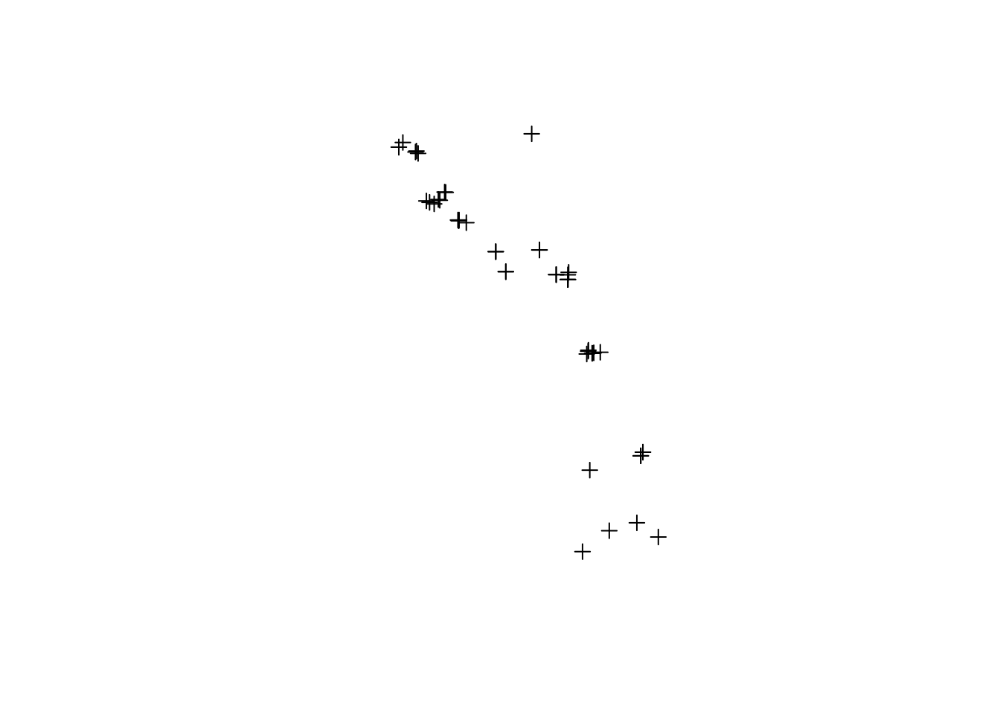
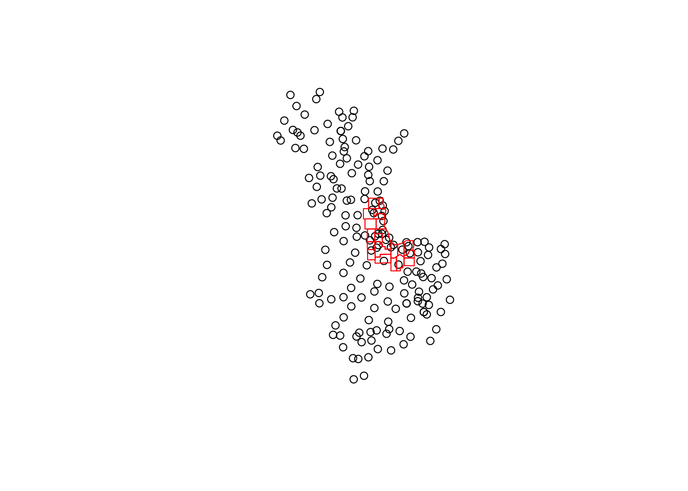

1 Weather Data Preparation and Wrangling
This project uses weather and pollution data from remotely sensed satellite imagery, but also ground based sensors maintained by the EPA and FAA to model air quality in the Midwest. Using the ground sensors, the team can determine how accurate the models are at predicting air quality. This chapter focuses on how weather and pollution data from ground sensors was downloaded and prepared for use in refining air quality models.
1.1 Querying EPA Data in R
EPA data was seamlessly imported into R using a custom package, named epadata. The package takes advanatge of the EPA AQS DataMart API to load data in R as data.frame objects with only a couple lines of code. It allows users to query for sensor data across multiple years, states, and air quality variables. Let’s get started by downloading the package, then we’ll do a walkthrough of the epadata package.
devtools::install_url('https://uchicago.box.com/shared/static/jwpi7l89t58lm1sukit2tvcdavs5sz5t.zip', quiet = TRUE)
library(epadata)1.1.1 Getting Started
This section describes the process for querying EPA sensor data using the epadata package. For more information on how each function works, please reference the package documentation.
Registering for an API Key
For first time users of the AQS DataMart API, you must first register your email to recieve an API key. (Users who already have a DataMart API key, please skep to the next step). The API key is a required input for all querying functions in the epadata package. Obtaining a key is made simple by calling the API.signup() function and inputting your own email address.
Save your API key from the email confirmation for future reference. In case you don’t recieve an email, verify that your email address was typed correctly, and check your spam folder.
Your First Data Query
Below, we’ll query for PM2.5 data across Indiana and Wisconsin for the years 2017 and 2018 using the EPA.daily.summary() function. This function will return a data.table containing a record of the daily average of the selected variable for all sensors with available data during the selected year and selected state.
PM25.data = EPA.daily.summary(email = email,
key = key,
year.range = 2017:2018,
state.FIPS.list = list(18, 55),
pollutant.code = 88502)## Querying API for pollutant 88502 between 20170101 and 20171231 in state 18## Querying API for pollutant 88502 between 20180101 and 20181231 in state 18## Querying API for pollutant 88502 between 20170101 and 20171231 in state 55## Querying API for pollutant 88502 between 20180101 and 20181231 in state 55## state_code county_code site_number parameter_code poc latitude longitude
## 1 55 041 0007 88502 1 45.565 -88.8086
## 2 55 041 0007 88502 1 45.565 -88.8086
## 3 55 041 0007 88502 1 45.565 -88.8086
## 4 55 041 0007 88502 1 45.565 -88.8086
## 5 55 041 0007 88502 1 45.565 -88.8086
## 6 55 041 0007 88502 1 45.565 -88.8086
## datum parameter sample_duration
## 1 NAD83 Acceptable PM2.5 AQI & Speciation Mass 24 HOUR
## 2 NAD83 Acceptable PM2.5 AQI & Speciation Mass 24 HOUR
## 3 NAD83 Acceptable PM2.5 AQI & Speciation Mass 24 HOUR
## 4 NAD83 Acceptable PM2.5 AQI & Speciation Mass 24 HOUR
## 5 NAD83 Acceptable PM2.5 AQI & Speciation Mass 24 HOUR
## 6 NAD83 Acceptable PM2.5 AQI & Speciation Mass 24 HOUR
## pollutant_standard date_local units_of_measure event_type
## 1 NA 2017-01-01 Micrograms/cubic meter (LC) None
## 2 NA 2017-01-04 Micrograms/cubic meter (LC) None
## 3 NA 2017-01-07 Micrograms/cubic meter (LC) None
## 4 NA 2017-01-10 Micrograms/cubic meter (LC) None
## 5 NA 2017-01-13 Micrograms/cubic meter (LC) None
## 6 NA 2017-01-16 Micrograms/cubic meter (LC) None
## observation_count observation_percent validity_indicator arithmetic_mean
## 1 1 100 Y 3.6
## 2 1 100 Y 1.3
## 3 1 100 Y 4.5
## 4 1 100 Y 9.5
## 5 1 100 Y 3.0
## 6 1 100 Y 6.1
## first_max_value first_max_hour aqi method_code
## 1 3.6 0 15 707
## 2 1.3 0 5 707
## 3 4.5 0 19 707
## 4 9.5 0 40 707
## 5 3.0 0 13 707
## 6 6.1 0 25 707
## method
## 1 IMPROVE Module A with Cyclone Inlet-Teflon Filter, 2.2 sq. cm. - GRAVIMETRIC
## 2 IMPROVE Module A with Cyclone Inlet-Teflon Filter, 2.2 sq. cm. - GRAVIMETRIC
## 3 IMPROVE Module A with Cyclone Inlet-Teflon Filter, 2.2 sq. cm. - GRAVIMETRIC
## 4 IMPROVE Module A with Cyclone Inlet-Teflon Filter, 2.2 sq. cm. - GRAVIMETRIC
## 5 IMPROVE Module A with Cyclone Inlet-Teflon Filter, 2.2 sq. cm. - GRAVIMETRIC
## 6 IMPROVE Module A with Cyclone Inlet-Teflon Filter, 2.2 sq. cm. - GRAVIMETRIC
## local_site_name site_address state county city
## 1 POTAWATOMI FIRE TOWER RD, POTAWATOMI SITE Wisconsin Forest Not in a city
## 2 POTAWATOMI FIRE TOWER RD, POTAWATOMI SITE Wisconsin Forest Not in a city
## 3 POTAWATOMI FIRE TOWER RD, POTAWATOMI SITE Wisconsin Forest Not in a city
## 4 POTAWATOMI FIRE TOWER RD, POTAWATOMI SITE Wisconsin Forest Not in a city
## 5 POTAWATOMI FIRE TOWER RD, POTAWATOMI SITE Wisconsin Forest Not in a city
## 6 POTAWATOMI FIRE TOWER RD, POTAWATOMI SITE Wisconsin Forest Not in a city
## cbsa_code cbsa date_of_last_change
## 1 NA NA 2018-10-12
## 2 NA NA 2018-10-12
## 3 NA NA 2018-10-12
## 4 NA NA 2018-10-12
## 5 NA NA 2018-10-12
## 6 NA NA 2018-10-12Notice how for each each data request, you must specify which timeframe (year.range = 2017:2018), states (state.FIPS.list = list(18, 55)), and which pollutant/weather variable (pollutant.code = 88502) to query for. Inputting this data might not be strightforward at first, but the package has some other built-in functions to help you.
1.1.2 Selecting timeframes, states, and pollutant/weather variables
- Timeframes: This is the simplest variable to select, as it is simply a number range representing the year. More granular timescales can be extracted from queried data if needed.
year.range = 2014:2018 # Query for data in years 2014, 2015, 2016, 2017, and 2018
year.range = 2016:2016 # Query for data in 2016 only- States: You must input the state(s) FIPS code because the DataMart API uses this as a parimary key for all U.S. states.
state.FIPS.list = list(18, 55) # Query for data in Indiana (18) and Wisconsin (55)
state.FIPS.list = list(17) # Query for data in Illinois (17) only.If you don’t know the FIPS code associated with the State you’re querying for, use the following function to find it. This function will return a data table containing the FIPS code for each State.
## code value_represented
## 1 01 Alabama
## 2 02 Alaska
## 3 04 Arizona
## 4 05 Arkansas
## 5 06 California
## 6 08 Colorado- Pollutant/Weather Variable: The EPA has a large bank of variables to choose from. Variables are first categorized as classes. A listing of available classes can be quried from the API as shown below. Each class has a unique code assigned to it.
## code
## 1 AIRNOW MAPS
## 2 ALL
## 3 AQI POLLUTANTS
## 4 CORE_HAPS
## 5 CRITERIA
## 6 CSN DART
## value_represented
## 1 The parameters represented on AirNow maps (88101, 88502, and 44201)
## 2 Select all Parameters Available
## 3 Pollutants that have an AQI Defined
## 4 Urban Air Toxic Pollutants
## 5 Criteria Pollutants
## 6 List of CSN speciation parameters to populate the STI DART toolUsing your chosen class code, you can find the individual variables within each class. Alternatively, you can also query for all variables, but this is not recommended as the list is very large.
variable.codes.1 = variable.list(email, key, class = 'CORE_HAPS') # Search for variables in the Urban Air Toxic Pollutants class.
head(variable.codes.1)## code value_represented
## 1 12103 Arsenic (TSP) STP
## 2 12105 Beryllium (TSP) STP
## 3 12110 Cadmium (TSP) STP
## 4 12112 Chromium (TSP) STP
## 5 12115 Chromium VI (TSP) STP
## 6 12128 Lead (TSP) STPvariable.codes.2 = variable.list(email, key, class = 'ALL') # Returns all available EPA vairables. NB: This will create a very large data table and could take some time to load.Advanced Querying
- Fetching Daily Summaries for Multiple Variables in a single query is not recommended. This is due to long processing times regardless of internet bandwidth/speed and large output data tables. However, you may choose to do this usign the apply family of functions, as shown below.
pollutant.codes = list(88502, 81102) # Two pollutant codes, one for each pollutant variable
pollutant.data = lapply(pollutant.codes, FUN = function(x){
EPA.daily.summary(email = email,
key = key,
year.range = 2017:2018,
state.FIPS.list = list(18, 55),
pollutant.code = x)
}) %>% do.call("rbind", .)
# Verifying that multiple pollutant variables were chosen
unique(pollutant.data$parameter)1.1.3 Sensor Locations and Metadata
The epadata package also allows you to query for station location and other sensor-related metadata. The function below does this for you, and has a similar usage to the daily summary function.
sensors = EPA.monitor.locations(email = email,
key = key,
year.range = 2017:2018,
state.FIPS.list = list(18, 55),
pollutant.code = list(88502, 81102))
plot(sensors)
By default, the function will return a spatial object. However, you can forego the spatial data component and keep only the attribute table by changing spatial to FALSE as shown below.
EPA.sensors.df = EPA.monitor.locations(email = email,
key = key,
year.range = 2017:2018,
state.FIPS.list = list(18, 55),
pollutant.code = list(88502, 81102),
spatial = FALSE)
EPA.sensors.df[1:2,]## state_code county_code site_number parameter_code poc
## 1 18 089 2004 88502 5
## 2 18 175 9000 88502 1
## parameter_name open_date close_date
## 1 Acceptable PM2.5 AQI & Speciation Mass 2004-01-04 <NA>
## 2 Acceptable PM2.5 AQI & Speciation Mass 2001-03-08 <NA>
## concurred_exclusions dominant_source measurement_scale measurement_scale_def
## 1 <NA> <NA> <NA> <NA>
## 2 <NA> <NA> <NA> <NA>
## monitoring_objective last_method_code
## 1 POPULATION EXPOSURE 810
## 2 GENERAL/BACKGROUND 707
## last_method_description
## 1 Met One SASS Teflon - Gravimetric
## 2 IMPROVE Module A with Cyclone Inlet-Teflon Filter, 2.2 sq. cm. - GRAVIMETRIC
## last_method_begin_date naaqs_primary_monitor qa_primary_monitor monitor_type
## 1 2004-01-04 <NA> <NA> SLAMS
## 2 2001-03-08 <NA> <NA> EPA
## networks monitoring_agency_code
## 1 CSN SUPPLEMENTAL 0520
## 2 IMPROVE 0745
## monitoring_agency si_id latitude
## 1 Indiana Depart Of Environ Management/Office Of Air Quality 4388 41.58550
## 2 National Park Service 93130 38.53465
## longitude datum lat_lon_accuracy elevation probe_height pl_probe_location
## 1 -87.47449 WGS84 20 188 NA <NA>
## 2 -86.26037 WGS84 5 282 NA <NA>
## local_site_name
## 1 Hammond- Purdue/ Powers Bldg. Purdue University
## 2 <NA>
## address state_name county_name
## 1 PURDUE UNIV CALUMET-POWERS BUILDING 2200 169th St. Indiana Lake
## 2 Livonia Indiana Washington
## city_name cbsa_code cbsa_name csa_code
## 1 Hammond 16980 Chicago-Naperville-Elgin, IL-IN-WI 176
## 2 Not in a City 31140 Louisville/Jefferson County, KY-IN 350
## csa_name tribal_code
## 1 Chicago-Naperville, IL-IN-WI <NA>
## 2 Louisville/Jefferson County--Elizabethtown--Madison, KY-IN <NA>
## tribe_name
## 1 <NA>
## 2 <NA>1.2 Querying for FAA Data in R
FAA weather data gathered from the Automated Surface Observing System (ASOS) can be imported using the riem package. This package, created by ROpenSci queries weather data from the Iowa Environmental Mesonet, an online portal for international ASOS data maintained by Iowa State University. First, let’s load the package.
## Skipping install of 'riem' from a github remote, the SHA1 (b2f2e412) has not changed since last install.
## Use `force = TRUE` to force installation1.2.1 Simple Data Query
Below is an R code snippet that performs the simplest weather data query possible in the riem package. It specifies a particular weather station using an airport code and a date range to query for. The output is a tibble table of raw ASOS weather data.
SFO.weather = riem_measures(station = 'KSFO', date_start = "2014-01-01", date_end = '2014-01-02')
head(SFO.weather)## # A tibble: 6 x 31
## station valid lon lat tmpf dwpf relh drct sknt p01i
## <chr> <dttm> <dbl> <dbl> <dbl> <dbl> <dbl> <dbl> <dbl> <dbl>
## 1 SFO 2014-01-01 00:56:00 -122. 37.6 54.0 43.0 66.3 290 8 0
## 2 SFO 2014-01-01 01:56:00 -122. 37.6 52.0 43.0 71.3 280 9 0
## 3 SFO 2014-01-01 02:56:00 -122. 37.6 51.1 44.1 76.8 290 8 0
## 4 SFO 2014-01-01 03:56:00 -122. 37.6 48.9 37.9 65.7 0 0 0
## 5 SFO 2014-01-01 04:56:00 -122. 37.6 50 39.9 68.2 0 0 0
## 6 SFO 2014-01-01 05:56:00 -122. 37.6 48.9 37.0 63.4 0 0 0
## # … with 21 more variables: alti <dbl>, mslp <dbl>, vsby <dbl>, gust <lgl>,
## # skyc1 <chr>, skyc2 <chr>, skyc3 <chr>, skyc4 <lgl>, skyl1 <dbl>,
## # skyl2 <dbl>, skyl3 <dbl>, skyl4 <lgl>, wxcodes <lgl>,
## # ice_accretion_1hr <lgl>, ice_accretion_3hr <lgl>, ice_accretion_6hr <lgl>,
## # peak_wind_gust <lgl>, peak_wind_drct <lgl>, peak_wind_time <lgl>,
## # feel <dbl>, metar <chr>The outputted table shows weather data for a 24-hour period on January 1st, 2014 at the San Francisco International Airport. The valid column species when each weather report was generated, typically at 1-hour intervals. The tmpf and dwpf columns give the ambient air temperature and dew point in Fahrenheit (ºF). Other important variables in our project include air pressure (alti), measured in inches of mercury (in.Hg), and visibility (vsby) in miles. For more information on all available varibles, see Iowa State’s Documentation.
Next, we will apply this function at a large scare across multiple sensors and timescales.
1.2.2 Selecting Which Sensors to Query
The FAA collects weather data at hourly intervals for each meteorological station, with some stations providing half-hour intervals. Even querying for short periods of time can yield large amounts of data. To optimise performance, we want to only query data from stations in our study area.
Finding Sensors by State
In our project, we focus on certain counties in Illinois, Indiana, and Wisconsin, so we are interested in finding the sensors within that study area. The first step is to query the locations of all weather stations in Illinois, Indiana, and Wisconsin using the reim package. In the example below, we query for sensors in the Illinois ASOS sensor network.
## # A tibble: 61 x 4
## id name lon lat
## <chr> <chr> <dbl> <dbl>
## 1 ALN ALTON/ST LOUIS R -90.0 38.9
## 2 BMI BLOOMINGTON/NORM -88.9 40.5
## 3 CPS CAHOKIA/ST LOUIS -90.2 38.6
## 4 CIR Cairo -89.2 37.1
## 5 MDH CARBONDALE/MURPH -89.2 37.8
## 6 CUL Carmi -88.1 38.1
## 7 ENL CENTRALIA -89.1 38.5
## 8 CMI CHAMPAIGN/URBANA -88.3 40.0
## 9 MDW CHICAGO -87.8 41.8
## 10 ARR CHICAGO/AURORA -88.5 41.8
## # … with 51 more rowsTo query for data across multiple states, we are going the apply the riem_stations function to a list of weather station networks, as shown below.
networks = list('IL_ASOS', 'IN_ASOS', 'WI_ASOS')
library(dplyr, quietly = TRUE)
station.locs = lapply(networks, riem::riem_stations) %>%
do.call(rbind, .) # Creates a single data table as output
head(station.locs)## # A tibble: 6 x 4
## id name lon lat
## <chr> <chr> <dbl> <dbl>
## 1 ALN ALTON/ST LOUIS R -90.0 38.9
## 2 BMI BLOOMINGTON/NORM -88.9 40.5
## 3 CPS CAHOKIA/ST LOUIS -90.2 38.6
## 4 CIR Cairo -89.2 37.1
## 5 MDH CARBONDALE/MURPH -89.2 37.8
## 6 CUL Carmi -88.1 38.1Note: You can find a list of state abbreviations by typing ‘state.abb’ in your R console.
Converting Latitude and Longitude Coordinates to Spatial Data
The data tables returned by the riem package must be converted to spatial data to determine which sensors are located in the study area. Since the lon/lat coordinates are already provided, the data table is easily converted to a spatial sf object.
station.locs.sf = sf::st_as_sf(station.locs, coords = c("lon", "lat"), crs = 4326)
# Plot stations and study area boundaries to verify that the correct sensors were selected
plot(station.locs.sf$geometry)
plot(sf::st_read('https://uchicago.box.com/shared/static/uw0srt8nyyjfqo6l0dv07cyskwmv6r50.geojson', quiet = TRUE)$geometry, border = 'red', add = TRUE)
We plot to results to verify that our query and data conversion process worked correctly. For reference, the boundaires of the study area is outlined in red.
Selecting Sensors within a Study Area
Next, we perform a spatial join to only keep the points located within the boundaries of our study area polygons. The spatial join is completed by the sf package, as shown below. For more information regarding spatial joins and spatial predicates, please see this helpful blog post by GISgeography.com.
# Loading study area boundaries
study.area = sf::st_read('https://uchicago.box.com/shared/static/uw0srt8nyyjfqo6l0dv07cyskwmv6r50.geojson', quiet = TRUE)
study.sensors = sf::st_join(station.locs.sf, study.area, left = FALSE)
# Verify Spatial Join by Plotting
plot(study.area$geometry, border = 'red')
plot(study.sensors$geometry, add = TRUE)
title('Weather Stations Within the Study Area')
Now that we have a dataset of which weather stations we are interested in, we can query for the weather data associated with each station.
1.2.3 Querying Weather Data for Multiple Stations
Again we use the lapply function in base R to execute the riem_measures function on a list of sensor IDs. This allows us to iterativelt query for weather data from each individual sensor in a list. In the code snippet below, we take the study sensors obtained previously and query for a single day’s worth of weather data.
library(dplyr, quietly = TRUE)
weather.data = lapply(study.sensors$id, function(x){riem::riem_measures(x, date_start = "2014-01-01", date_end = "2014-01-02")}) %>%
do.call(rbind, .) # Creates a single data table as output## Warning: No results for this query.
## Warning: No results for this query.
## Warning: No results for this query.## # A tibble: 6 x 31
## station valid lon lat tmpf dwpf relh drct sknt p01i
## <chr> <dttm> <dbl> <dbl> <dbl> <dbl> <dbl> <dbl> <dbl> <dbl>
## 1 MDW 2014-01-01 00:49:00 -87.8 41.8 12.2 8.6 85.2 230 3 0.01
## 2 MDW 2014-01-01 00:51:00 -87.8 41.8 12.9 8.96 83.8 230 3 0.01
## 3 MDW 2014-01-01 01:51:00 -87.8 41.8 12.9 8.96 83.8 280 3 0.0001
## 4 MDW 2014-01-01 02:27:00 -87.8 41.8 14 8.6 78.7 340 4 0.01
## 5 MDW 2014-01-01 02:51:00 -87.8 41.8 14 8.96 80.0 340 5 0.02
## 6 MDW 2014-01-01 03:08:00 -87.8 41.8 14 10.4 85.3 360 7 0.0001
## # … with 21 more variables: alti <dbl>, mslp <dbl>, vsby <dbl>, gust <dbl>,
## # skyc1 <chr>, skyc2 <chr>, skyc3 <chr>, skyc4 <lgl>, skyl1 <dbl>,
## # skyl2 <dbl>, skyl3 <dbl>, skyl4 <lgl>, wxcodes <chr>,
## # ice_accretion_1hr <dbl>, ice_accretion_3hr <lgl>, ice_accretion_6hr <dbl>,
## # peak_wind_gust <lgl>, peak_wind_drct <lgl>, peak_wind_time <lgl>,
## # feel <dbl>, metar <chr>Missing Weather Stations
Some weather stations are unable to provide data during the requested time period, so a warning message is returned to the R console. You can see which ones are not active by comparing the study.sensors IDs and the weather.data station IDs, as shown below.
## Simple feature collection with 3 features and 10 fields
## geometry type: POINT
## dimension: XY
## bbox: xmin: -88.3726 ymin: 41.8588 xmax: -87.6079 ymax: 42.7972
## epsg (SRID): 4326
## proj4string: +proj=longlat +datum=WGS84 +no_defs
## # A tibble: 3 x 11
## id name geometry STATE CWA COUNTYNAME FIPS TIME_ZONE
## <chr> <chr> <POINT [°]> <fct> <fct> <fct> <fct> <fct>
## 1 CGX "CHI… (-87.6079 41.8588) IL LOT Cook 17031 C
## 2 06C "Chi… (-88.1012 41.9893) IL LOT DuPage 17043 C
## 3 57C "Eas… (-88.3726 42.7972) WI MKX Walworth 55127 C
## # … with 3 more variables: FE_AREA <fct>, LON <dbl>, LAT <dbl>Querying Large Weather Datasets
Use caution when querying for a large amount of data. Data tables can easily become unwieldy after querying for a large number of weather stations across a wide time scale. The code snippet below downloads all ASOS weather data for sensors in our study area from January 1st 2014 to December 31st 2018. It has approximately 4.8 Million records and takes 6-10 minutes to download.
1.3 Using Weather Data to Interpolate a Raster Surface
To refine our models, we need to know or estimate meteorological variables across our entire study area. However, the downloaded weather data is only accurate at the exact sensor location where the measurement was taken. Therefore, we propose to linearly interpolate meteorological variables. The method used is an Inverse Distance Weighting for a raster resolution of 1 km, implemented in R as described below.
1.3.1 Your First Interpolation
This section describes how to create interpolated raster surfaces using the purpose-built sensor2raster package. First, let’s download and install the package.
devtools::install_url('https://uchicago.box.com/shared/static/u57vxg90ytieu86ow3m8xats3ebmfek4.tar.gz', quiet = TRUE)
library(sensor2raster)Workflow Execution
Next, we run the Sensor.to.Raster function on a sample EPA dataset of PM2.5 readings across Indiana Illinois, and Wisconsin in 2017. The function takes the raw output from an EPA or FAA data query, a data type (‘EPA’ or ‘FAA’ only) to perform the IDW analysis. An input of county boundaries defines the extent of the raster output. Meanwhile, the reference.grid input allows the user to input a vector-format grid to improve the readability of the output.
raster = Sensor.to.Raster(Sensor.data = sample.data,
data.type = 'EPA',
reference.grid = km.grid,
counties = sample.counties)## Wrangling EPA Data## Aggregating Data to Monthly and Quarterly Scales## Creating IDW Surface for each Month and Quarter between 2017 and 2017## Registered S3 method overwritten by 'xts':
## method from
## as.zoo.xts zoo## [inverse distance weighted interpolation]
## [inverse distance weighted interpolation]
## [inverse distance weighted interpolation]
## [inverse distance weighted interpolation]
## [inverse distance weighted interpolation]
## [inverse distance weighted interpolation]
## [inverse distance weighted interpolation]
## [inverse distance weighted interpolation]
## [inverse distance weighted interpolation]
## [inverse distance weighted interpolation]
## [inverse distance weighted interpolation]
## [inverse distance weighted interpolation]
## [inverse distance weighted interpolation]
## [inverse distance weighted interpolation]
## [inverse distance weighted interpolation]
## [inverse distance weighted interpolation]## Converting Raster Grid to Vector Grid## Finished! Monthly Data is the first element in outputted list, Quarterly is the 2nd elementOutput Interpretation
The Sensor.to.Raster function outputs four objects in a list. The first two elements contain Vector data products at Monthly and Quarterly time scales. The last two elements contain the equivalent product in Raster format.
Raster Product
Below is the sample Raster output for the 1st Quarter and 1st Month of 2017. Notice how multiple list objects are subsetted in the ouput of Sensor.to.Raster
raster::plot(raster$Quarterly_Raster_Data$Q1.2017, main = 'Average Observed PM2.5 Levels in Q1 2017')
sp::plot(sample.counties, add = TRUE) # Adding county boundaries for reference
raster::plot(raster$Monthly_Raster_Data$M1.2017, main = 'Average Observed PM2.5 Levels in Jan 2017')
sp::plot(sample.counties, add = TRUE) # Adding county boundaries for reference
Vector Product
The same data is available is a vecorized grid format using the same grid specified by the user as an input. In this format, each month or quarter is represented by as a data field in the attribute table. This not only makes the data more compact, but also allows for improved data analysis. Below, we show the attribute table for the first five grid cells.
## M1.2017 M2.2017 M3.2017 M4.2017 M5.2017 M6.2017 M7.2017 M8.2017
## 0 9.913034 9.488899 7.314569 7.433544 8.265008 8.204897 9.016285 9.733383
## 1 9.914292 9.489582 7.315106 7.433813 8.265065 8.204830 9.016273 9.732876
## 2 9.915646 9.490298 7.315677 7.434110 8.265130 8.204779 9.016296 9.732355
## 3 9.917095 9.491049 7.316284 7.434434 8.265203 8.204744 9.016353 9.731820
## 4 9.918642 9.491834 7.316926 7.434787 8.265284 8.204725 9.016446 9.731269
## M9.2017 M10.2017 M11.2017 M12.2017
## 0 10.00584 7.037685 8.103771 8.165271
## 1 10.00575 7.037727 8.103471 8.165401
## 2 10.00563 7.037752 8.103176 8.165566
## 3 10.00548 7.037761 8.102886 8.165766
## 4 10.00530 7.037754 8.102601 8.1660011.3.2 The IDW Workflow
The workflow is designed to take time-series data input for a single variable from a multitude of either EPA or FAA ASOS sensors, and create IDW surfaces at monthly and quarterly timescales. The final data product models the intensity of the chosen variable across a wide area.
For example, this workflow can take ASOS Temperature data gathered from multiple sensors across a wide-area and predict the temperature in each location across the area, even if a sensor is not located there.
The entire workflow is divided into five helper functions that are each called in sucession by the larger Sensor.to.Raster function. Three functions act upon the EPA or FAA data to wrangle it into an approprite format for the IDW interpolation. The interpolation is handeled by another helper function based off the idw function from the gstat package. Finally, the data is post-processed into manageble vector and raster products.